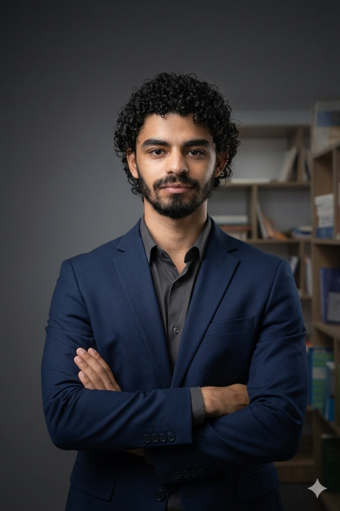

Élève Ingénieur en 4ème année de Génie Informatique spécialisé en Cybersécurité, Intelligence Artificielle et Ingénierie Logicielle. Expert dans la conception d'architectures distribuées et sécurisées (REST, JWT, PKI/RSA), le déploiement de pipelines ML/Computer Vision (Scikit-Learn, YOLOv8), la surveillance SIEM/SOC (Wazuh, TheHive) et l'intégration de modèles LLM/RAG. Orienté performance et sécurité, je développe des solutions d'entreprise Full-Stack à fort impact.